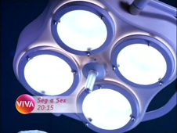

Mulher
| reprisada de | 18/05/2010 a 11/08/2010 (1º ciclo) |
|---|---|
| em 2 temporadas, com 62 episódios | |
| frequência | segunda-feira a sexta-feira |
| faixa | oito e quinze da noite |
| horário alternativo | seg a sex, à 1h30 |
Série médica criada por Antônio Calmon, Daniel Filho e Elizabeth Jhin a partir de ideia original de Boni, exibida entre 1998 (na primeira linha de shows) e 1999 (na segunda linha de shows), que colocava em pauta a saúde feminina através das pacientes de uma clínica na cidade do Rio de Janeiro. Para além do envolvimento na profissão, duas médicas do estabelecimento partilham seus problemas pessoais, apoiadas pelas visões angariadas em estágios diferentes da vida, amadurecendo, com muita cumplicidade, uma bela amizade.
Mulher foi o primeiro programa a ser exibido no Viva, logo após seu vídeo de inauguração, às 20h30 de 18/05/2010, uma terça-feira. A exibição da série enfatizou o posicionamento de marca do canal em seu princípio, voltado ao público-alvo feminino com mais de 35 anos.
Considerando o período até julho de 2010, CMulher era o 5º programa mais visto do Viva.
Ao final daquele mês, antes mesmo do fim de seu primeiro ciclo no horário principal, Mulher passou a ser reexibida desde o início em um novo horário no Viva: ao meio-dia, antecedendo os novos horários principais das atrações infantojuvenis do canal (que substituíram, por sua vez, o então primeiro horário do Mais Você, das 13h às 14h30). Desde maio, esse horário alocava momento alternativo para a faixa de minisséries, mas só foi utilizado com tal fim enquanto A Casa Das Sete Mulheres esteve no ar.
Na noite de 11/08/2010, uma quarta-feira, o 1º ciclo de Mulher chegou ao fim com a exibição, no horário principal, do último episódio da série. Brava Gente assumiu a faixa no dia seguinte. A exibição de Mulher permaneceu no horário diurno por mais um tempo, até que, a partir de 04/10/2010 (segunda-feira), o horário do meio-dia passou a comportar uma exibição alternativa da faixa noturna de novelas, então recém estreada. Assim sendo, Mulher deixou a frequência diária e tornou-se semanal, sendo exibido aos domingos, às 19h, com horário alternativo aos sábados, à 1h. Em fevereiro de 2011, foi substituída pela série A Justiceira.
Após um hiato de 3 anos, a série incumbida de inaugurar o Viva retornou ao canal, em 14/05/2014. À época, a faixa de minisséries, (segunda-feira a sexta-feira, 23h10), foi substituida por uma variedade de séries e seriados exibidos semanalmente. Mulher, por sua vez, era exibido todas as quartas-feiras. Durante 4 semanas, período entre o término de A Próxima Vítima e a estreia de A Viagem, em faixa já transferida para às 14h30 (anterior 16h15), a faixa mista de séries e seriados fez as vezes deste horário; logo, nesse ínterim, o episódio da semana de Mulher era exibido mais duas vezes: na mesma noite do horário principal, às quartas, à 1h45 (logo após História de Amor), e no dia seguinte, quinta-feira, às 14h30 (logo após Dancin' Days).
Só posteriormente fora fixado um horário alternativo próprio: aos sábados, às 16h15 (logo após a sequência de novelas em suas exibições vespertinas desse dia). Alguns horários vagos aos domingos (meio-dia e 21h) também foram testados ao longo do ciclo, mas não se consolidaram por um número expressivo de datas. Em março de 2015, a série passou a ir ao ar na quinta-feira, às 22h; em abril, foi transferida para os sábados, às 22h15. O último episódio foi ao ar em 08/08/2015.
chamada
"Patrícia Pillar e Eva Wilma são duas médicas enfrentando o dia a dia de uma clínica: lutando, para ajudar as suas pacientes. Os problemas do corpo e da alma feminina: Mulher, de segunda a sexta, oito e quinze da noite, no Viva."
- 